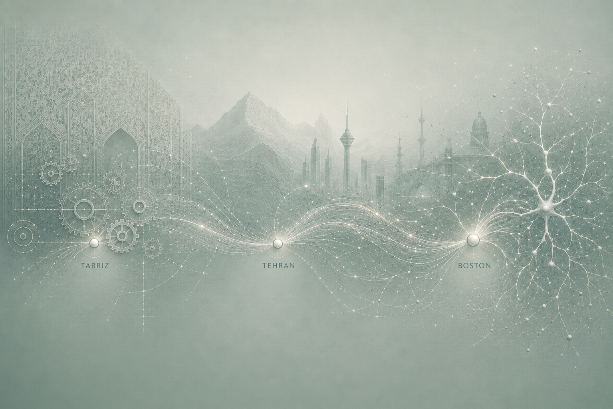

Still building my understanding through many failed attempts—each one a step toward understanding how complex systems behave. A rough but rewarding transition from systems like autonomous vehicles to proteins and biological networks. All revolving around dynamical systems—anything that changes over time, where we aim to understand and eventually shape outcomes.
I am interested in developing principled frameworks to understand and ultimately control the behavior of complex systems with nonlinear dynamics— particularly exploring how control theory can deepen our understanding of biological systems, and how insights from biology can, in turn, inspire new directions in control theory and its applications.
Broad explorations so far— from mechanistic modeling to data-driven approaches, and most recently the integration of prior knowledge with multimodal data, bringing together elements of feedback control, math, statistics, engineering, computer science, and, of course, biology.
Thinking about feedback control, stability, robustness, and how systems respond to inputs.
Thinking about high-dimensional, noisy, and often partial measurements—combining statistical analysis, predictive modeling, and mechanistic insight to better understand complex biological systems.
Articles and reflections on science, personal and professional development, and moving between fields, languages, cultures.
Some creative line of thought around augmented and virtual reality.
Read article →Chronic Self-Advocacy.
Read article →A rethinking of seemingly late bloomers — not all who wander are lost?
Read article →A humbling realization that our care has limits.
Read article →Some thoughts on barriers to scientific progress.
Read article →My academic journey began in Mechanical Engineering in Tabriz, Iran, where I explored a broad range of topics, from solid mechanics to fluid dynamics and classical control. I continued my studies in Tehran with a Master’s in Mechanical Engineering and a concentration in control and dynamical systems. There, my appreciation for control theory and its elegance in shaping system behavior deepened. Around that time, I came across research applying control-theoretic ideas to molecular networks—an intersection that shifted my direction and led me to Boston, MA, where I am now doing my PhD in Bioengineering, focusing on computational, systems, and synthetic biology.
My core research interest remains grounded in control and dynamical systems, with a growing curiosity about how these principles extend across domains—from biological systems to, more recently, questions in psychology, sociology, and bio-inspired robotics.

Always happy to connect around research, multidisciplinary collaboration, and creative ideas.